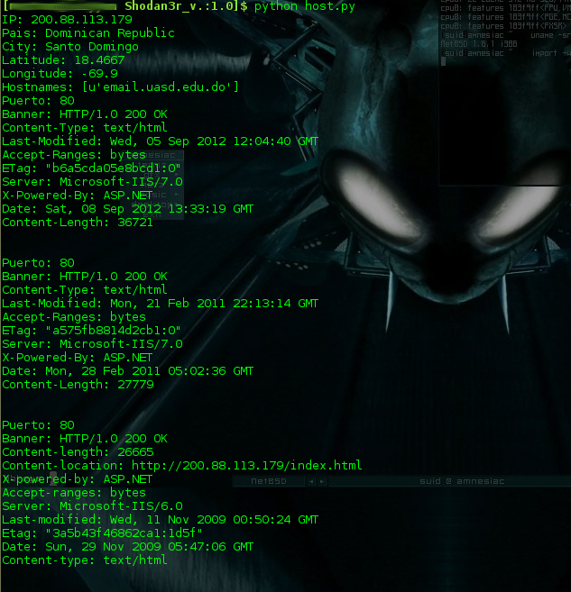
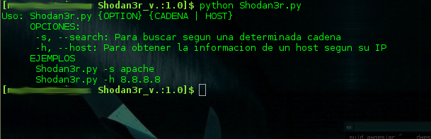
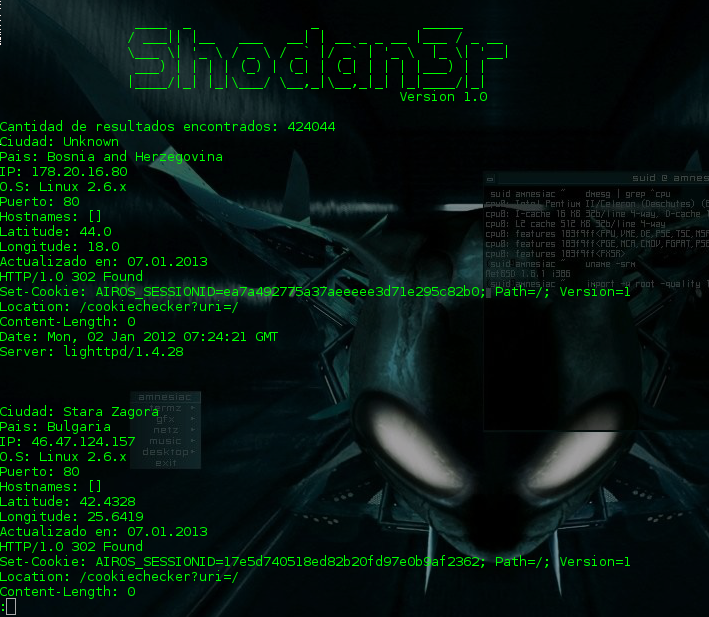
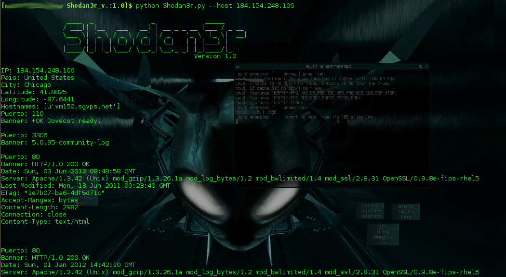

En este post veremos que usar la API de Shodan para Python es bastante sencillo, las ventajas de esto es que podemos utilizar este buscador desde nuestras aplicaciones en Python y desde la linea de comandos, la API también esta disponible para Perl y Ruby.
Sino sabes lo que es Shodan o simplemente aun no sabes usarlo del todo, te recomiendo leerte Shodan for Penetration Testers DefCon 18.
Ahora lo preliminar ante todo es que te registres en Shodan, es necesario para poder realizar algunas búsquedas y para obtener una API KEY necesaria para poder usar la API, luego de registrarte y loguearte tienes tu KEY en este link.
Bien ya luego de eso, lo que va es instalar la librería de shodan en la distro que uses (si, estoy asumiendo que usas GNU/Linux), yo en este momento estoy usando Debian Wheezy. Si tenemos Easy Install es bastante fácil sino te recomiendo que busques en el link anterior como instalarlo en tu distro.
Instalación
Instalamos la librería de shodan de la siguiente manera:
easy_install shodan
Nota: Necesitarás permiso de superusuario para eso.
En el caso de que ya este instalado para actualizar a la ultima versión hacemos lo siguiente:
easy_install -U shodan
Debo decir, que no estoy seguro de que la API de Shodan este disponible para Python 3, yo estoy usando la versión 2.7.x. Al final, del post luego de ver los ejemplos de las funcionalidades que entiendo más importantes de la API, les compartiré un script básico que he hecho.
Inicializando el objeto WebAPI
Primero inicializamos el objeto API de la siguiente manera:
from shodan import WebAPI SHODAN_API_KEY = "Aquí tu API KEY" api = WebAPI(SHODAN_API_KEY)
Buscando en Shodan
Perfecto, ya estamos ready, ahora veamos un ejemplo práctico usando el método WebAPI.search(), con el cual podemos realizar una búsqueda ordinaria en Shodan, veamos con el siguiente ejemplo:
#!/usr/bin/env python from shodan import WebAPI SHODAN_API_KEY = 'TU_API_KEY_AQUÍ' api = WebAPI(SHODAN_API_KEY) # Ponemos el código entre un try/catch para manejar las excepciones try: # Buscamos en Shodan con el método WebAPI.search() resultados = api.search('apache') # Mostramos el resultado print 'Cantidad de resultados encontrados: %s' % resultados['total'] for i in resultados['matches']: print 'Ciudad: %s' % i['city'] print 'Pais: %s' % i['country_name'] print 'IP: %s' % i['ip'] print 'O.S: %s' % i['os'] print 'Puerto: %s' % i['port'] print 'Hostnames: %s' % i['hostnames'] print 'Latitude: %s' % i['latitude'] print 'Longitude: %s' % i['longitude'] print 'Actualizado en: %s' % i['updated'] print i['data'] print '-----' * 10 except Exception as e: print 'Ups! Ha ocurrido un error: %s' % e
El código en parte se explica a si mismo, el método WebAPI.search() nos devuelve un diccionario con toda la información, este método devuelve mas de lo que estamos usando en el ejemplo arriba, para ver todo lo que devuelve puedes probar a presentar en pantalla todo el objeto.
Un corto ejemplo que tienen en su documentación respecto de lo que retorna el susodicho método es este:
{ 'total': 8669969, 'countries': [ { 'code': 'US', 'count': 4165703, 'name': 'United States' }, {'code': 'DE', 'count': 610270, 'name': 'Germany'}, {'code': 'JP', 'count': 496556, 'name': 'Japan'}, {'code': 'RO', 'count': 486107, 'name': 'Romania'}, {'code': 'GB', 'count': 273948, 'name': 'United Kingdom'} ], 'matches': [ { 'country': 'DE', 'data': 'HTTP/1.0 200 OK\r\nDate: Mon, 08 Nov 2010 05:09:59 GMT\r\nSer...', 'hostnames': ['pl4t1n.de'], 'ip': '89.110.147.239', 'os': 'FreeBSD 4.4', 'port': 80, 'updated': '08.11.2010' }, ... ] }
Buscando un host en específico
Ahora veremos como obtener los posibles resultados que Shodan pueda tener sobre un host en especifico, por medio de su IP. Para ello utilizaremos el método WebAPI.host().
try: host = api.host('200.88.113.179') # Imprimiendo la información obtenida print 'IP: %s' % host['ip'] print 'Pais: %s' % host.get('country_name') print 'City: %s' % host.get('city') print 'Latitude: %s' % host['latitude'] print 'Longitude: %s' % host['longitude'] print 'Hostnames: %s' % host['hostnames'] # Imprimimos los banners for i in host['data']: print 'Puerto: %s' % i['port'] print 'Banner: %s' % i['banner'] except Exception as e: print 'Ups! Ha ocurrido un error: %s' % e
Suponiendo que ya hemos importado la librería e inicializado el objeto, con el código de arriba obtendríamos cierta información de esa IP. Por ejemplo, lo de arriba alojaría el siguiente resultado:

Concluyendo...
Esta librería también tiene métodos para buscar y descargar módulos y exploits de Metasploit y Exploit-DB, respectivamente, así además como un modulo para geolocalización por medio de la MAC/BSSID de routers wireless. La documentación al respecto puede verla en la web oficial, yo decidí no hablar de eso porque han dado resultados erráticos.
Es decir, de 20 intentos de descargas de algún modulo o exploit solo 1 logro descargarse los demás me tiran error HTTP Error 502: Bad Gateway y sobre la geolocalización ésta ya en otras ocasiones igual me ha dado resultados inesperados. Por lo demás todo anda bien .
Acá les dejo mi script, esta muy nuevo aun le faltan funciones y demás y seguro que depurar unas que otras cosas, pero es un punto de partida :x Ya le iré preparando una nueva versión luego.
#!/usr/bin/env python # -*- coding: utf-8 -*- ###################################################### ### ### ### Shodan3r V.:1.0 ### ### ### ### 07/01/2013 ### ### ### ### Requiere: shodan ### ### easy_install shodan ### ### Testeado en Debian Wheezy con Python 2.7.x ### ### ### ###################################################### from shodan import WebAPI import re class Shodan: """ Clase para buscar en Shodan """ def __init__(self,API_KEY): self.api = WebAPI(API_KEY) def buscar(self,cadena): """ Busca según la cadena dada """ try: # Buscamos lo de la cadena pasada como parámetro resultado = self.api.search(str(cadena)) return resultado except Exception as e: print 'Ups! Ha ocurrido un error: %s' % e resultado = [] return resultado def obtener_info_host(self,IP): """ Obtiene la info que pueda tener shodan sobre una IP """ try: host = self.api.host(IP) return host except Exception as e: print 'Ups! Ha ocurrido un error: %s' % e host = [] return host def usage(): print """Uso: Shodan3r.py {OPTION} {CADENA | HOST} OPCIONES: -s, --search: Para buscar según una determinada cadena -h, --host: Para obtener la información de un host según su IP EJEMPLOS Shodan3r.py -s apache Shodan3r.py -h 8.8.8.8""" def banner(): print """ ____ _ _ _____ / ___|| |__ ___ __| | __ _ _ __ |___ / _ __ \___ \| '_ \ / _ \ / _` |/ _` | '_ \ |_ \| '__| ___) | | | | (_) | (_| | (_| | | | |___) | | |____/|_| |_|\___/ \__,_|\__,_|_| |_|____/|_| Versión 1.0 """ def main(): import sys import time API_KEY = 'API KEY AQUÍ' shodan = Shodan(API_KEY) if len(sys.argv) < 3: usage() sys.exit(2) else: if sys.argv[1] == '-s' or sys.argv[1] == '--search': banner() time.sleep(3) resultado = shodan.buscar(sys.argv[2]) if len(resultado) != 0: print 'Cantidad de resultados encontrados: %s' % resultado['total'] for i in resultado['matches']: print 'Ciudad: %s' % i.get('city','Unknown') print 'Pais: %s' % i.get('country_name','Unknown') print 'IP: %s' % i.get('ip') print 'O.S: %s' % i.get('os','Unknown') print 'Puerto: %s' % i.get('port') print 'Hostnames: %s' % i.get('hostnames') print 'Latitude: %s' % i.get('latitude','Unknown') print 'Longitude: %s' % i.get('longitude','Unknown') print 'Actualizado en: %s' % i.get('updated') print i['data'] print '' elif sys.argv[1] == '-h' or sys.argv[1] == '--host': banner() time.sleep(3) host = shodan.obtener_info_host(sys.argv[2]) if len(host) != 0: # Imprimiendo la informacion obtenida print 'IP: %s' % host.get('ip') print 'Pais: %s' % host.get('country_name','Unknown') print 'City: %s' % host.get('city','Unknown') print 'Latitude: %s' % host.get('latitude') print 'Longitude: %s' % host.get('longitude') print 'Hostnames: %s' % host.get('hostnames') # Imprimimos los banners for i in host['data']: print 'Puerto: %s' % i['port'] print 'Banner: %s' % i['banner'] print '' else: usage() sys.exit(2) if __name__ == '__main__': main()
Algunas capturas a continuación...
Uso o ayuda...

Buscando un dispositivo
python Shodan3r.py --search airos

Buscando un host
python Shodan3r.py --host 184.154.248.106

Espero que les haya gustado y servido el post, como siempre los comentarios son mas que bienvenidos.
Repositorio en github: github.com/n3x07/Shodan3r
Referencias